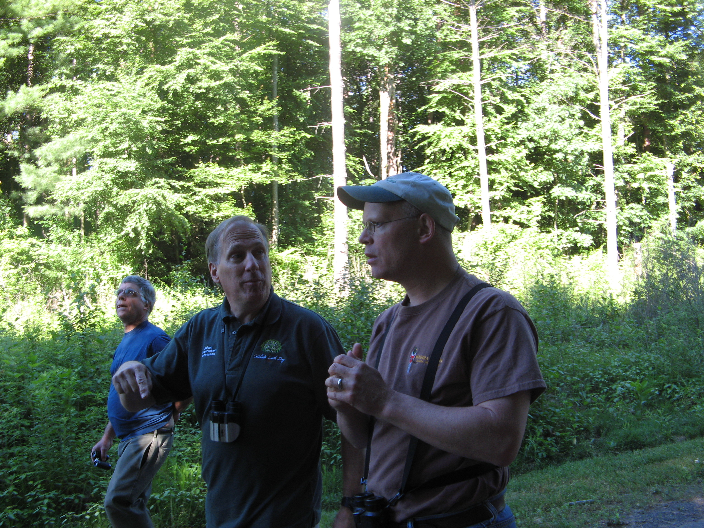

On Saturday, June 21, 2014, Steven Svec of the Allen Bird Club led a group through the park in search of birds.
Above, left-to-right: Dave, a participant on the walk; Rod Parlee, of the Bolton, CT Conservation Commission (who helps with the Rapid Stream Assessment), and Steven Svec, who led the walk.
Between 8:00 a.m. and 10:00 a.m., the group was not disappointed. Here is a list of all the birds they saw:
And here are the birds that Steve identified by ear, but no one saw:
It's almost time again for Robinson State Park Day. In case you didn't know, the Town of Agawam has proclaimed the third Saturday of every June as Robinson State Park day. This event is celebrated in the park with a wide range of activities.
This year, the schedule is as follows:
Led by Janet Orcutt of the Allen Bird Club. Bring binoculars.
Led by Gerri Morgan of the Wilbraham Hiking Club. Easy to moderate hiking. Poles, hiking boots, water, snack, and bug spray recommended. Appropriate for adults and older children.
Led by Matt (Twig) Largess, arborist and long-time friend of the park. He may also lead a walk through the recovering tornado damage. These short walks are especially appropriate for children.
Watch and help Nancy Bobskill, AHS environmental teacher, and Rod Parlee, of the Bolton, CT Conservation Commission, do a rapid stream assessment for water purity on streams that run through the park. Bring rubber boots. Anyone wishing to participate can respond to the Friends' email address for details and times: robinsonfriends@comcast.net.
Between the Trestle Pavilion and the pond. Volunteers from Agawam High School will assist.
Charlie will guide a comfortable walk along a particularly beautiful and peaceful stream. Meet in the parking lot adjacent to the picnic area/canoe launch.
Watch the Westfield River Watershed Association Annual Canoe & Kayak Cruise arrive at Robinson from the Westfield River at the park’s canoe launch area.
In addition to all of this, the Robinson Pond will be open for swimming and exploring. The paved River Road is perfect for a bike ride or a stroll.
Members of the Friends Group will be available at the Trestle Pavilion with nature pictures for children to color, photo displays, maps, and a general willingness to answer your questions and help you learn more about the park.
Please note that severe weather or heavy rain will lead to the event being cancelled.
AGAWAM, Mass. (WWLP) – Pioneer Valley Red Cross Hometown Heroes are chosen for having saved lives and helped improve the lives of others, while displaying strength of character. 22News shows you how two Agawam High School students sacrificed winning a race, when they helped someone on the opposing team who had suffered a seizure during the race.
“He had suffered a seizure, he was flushed, he was sweating, it didn’t look good,” said Sandra Land.
Hometown Heroes Sandra Land and Gina Lopez knew that by stopping to help the fallen cross country athlete from Belchertown High School, Agawam High School would forfeit the track meet at Robinson State Park last fall. They did the right thing.
“Gina going and getting help leading the people back to where I was with him, It seems that we lost the race in the end in the moment the face doesn’t matter,” said Land.
“I learned that anyone can rise to the occasion. You don’t have to be a doctor, you can check someone in the smallest way, by checking to see If they’re okay,” said Lopez.
Gina Lopez and Sandra Land made a decision that endeared them to Agawam Mayor Richard Cohen who nominated them as Hometown Heroes and to their proud coaches Bill Dillon and Carla Warner.
“Oh extremely, these two girls really stepped up at the right time, they did the right thing,” said Coach Dillon.
“In giving up her potential win against Belchertown, she gave back to a young man’s health and the integrity of her team,” said Carla Warner.